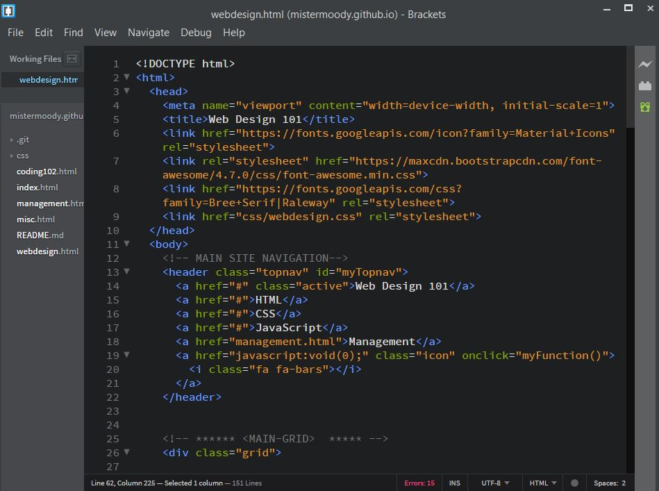
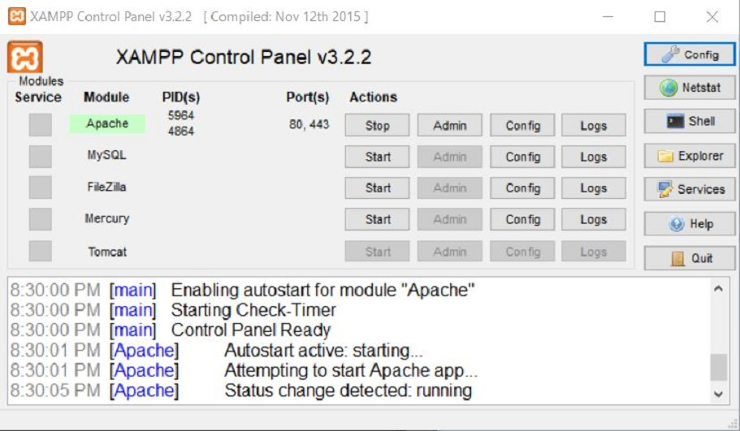

code Introduction
Learning to build web applications is an arduous process that requires a sprinkle of intelligence, a splash of determination and a whole lot of patience. I created this repository of resources to highlight my knowledge as a web developer.
This page provides an overview of the technical aspects pertinent for jumpstarting a career in web development. It is a simple no-frills guide for preparing a commuter to handle the demands of programming a web application.
Unlike the pages that deal with writing code, all resources listed on this page are embedded within the section where it is mentioned.
An embedded link with be underlined like this.
Setting Up your Dev Environment
Aside from owning a computer and having access to the internet you will also need:
- an IDE text-editor to program your application
- a Local Host-Server to work on a project in real-time offline
- a Version Control System to manage your work
Integrated Development Environment
An Integrated Development Environment is a software application that provides comprehensive facilities to computer programmers for software development. In general, an IDE is a graphical user interface (GUI)-based workbench designed to aid a developer in building software applications with an integrated source-code editor combined with all the required automation tools at hand. IDE's are designed to maximize programmer productivity by providing versitle components within a single program of which all development is done. IDE's typically provide many features for authoring, modifying, compiling, deploying and debugging software, which helps developers quickly execute actions without switching to other applications. My IDE of choice is Brackets.
LocalHost Server
A Localhost Server is a computer networking configuration that creates an online-like environment for developers to test applications without the need for internet access. Specifically, localhost is the host name for your computer and uses the IP address 127.0.0.1 to act as a loopback mechanism used to run a network service on a host without requiring a physical network interface. Those good folks at Apache Friends offer an open source cross-platform web server-stack with compatible options for users regardless of computer operating system. My localhost of choice is XAMMP.
Note: Before downloading this program, research alternatives that are best suited for you.
Version Control System
A Version Control System is a software configuration that records changes to web files over time so that you can recall specific versions later. For all intents and purposes, a VCS is an online storage repository for your code, enabling developers with the ability to manage source-code, track all file versions (independent of network access) and coordinate a non-linear workflow in a team environment. My VCS of choice Github due to its ease of use. You can check it out for yourself here.
This method of working with coded files is actually optional: it is not a requirement for facilitating a web application project. However, featured tenants of a VCS that I enjoy includes files never being lost and that those files are always accessible from any location in the world. Moreover, with some tinkering, security features can be implemented using the SSH protocol to synchronously connect with a file server, enabling near instantaneous deployment online.